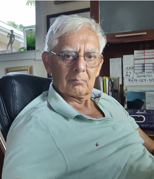
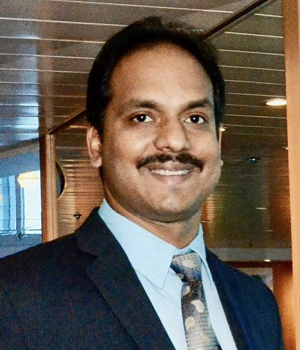

Santanu Dutta
Founder and Managing Partner
Dr. Santanu Dutta has over 40 years of experience in wireless technologies spanning satellite, cellular, HF, and mobile payments, acquired at companies like Ligado Networks, Ericsson Mobile Phones, and Rockwell International. Currently Chief Engineer and SVP Technology Research at Ligado Networks, he holds over 50 patents on wireless technologies. With partners, Dr. Rydbeck and Mr. Chakravartti, Dr. Dutta is an inventor in all TWS patents. He led Ericsson in Mobile Electronic Transactions (MeT), a forum of handset vendors seeking to standardize a framework for mobile payments from handsets in the early 2000s. He holds a Ph.D EE from Manchester University, UK.
Nils Rydbeck
Founder and Partner

Dr. Nils Rydbeck, ex-CTO of Ericsson Mobile Phones, is the conceptual inventor of Bluetooth, founder of Ericsson Mobile Phones and recipient of The Royal Swedish Academy of Engineering Science Gold Medal, among other honors. Currently, he is owner of Rydbeck Consulting, providing technical and executive consulting. He holds a Ph.D from Lund University, Sweden and PhD honoris causa from Blekinge Institute of Technology. He holds 50 some patents on wireless technologies. With partners, Dr. Dutta and Mr. Chakravartti, Dr. Rydbeck is an inventor in several TWS patents. As CTO of Ericsson Mobile Phones, he was an originator of the concept of Bluetooth based mobile payments.
Partha Chakravartti
Partner
Partha is an accomplished, senior IT executive with deep experience in Enterprise Architecture. He has a distinguished career in developing and delivering complex business and technology solutions. His areas of direct experience include Digital Transformation, Enterprise Architecture practice, and much else. Founder of several for-profit and nonprofit organizations, Partha has multiple publications, professional memberships, certifications, awards and recognitions. He holds a bachelor’s degree in Electrical Engineering and a master’s in computer science. With partners, Dr. Dutta and Dr. Rydbeck, Mr. Chakravartti is an inventor in some TWS patents. He is also involved in helping Dr. Dutta manage TWS.
Vasu Kollipara
Partner

As CEO at Stat9 Technologies, a privately held global IT services and sourcing company, Vasu oversees the operation of a 20 million dollar plus organization. His company had prime responsibility in developing proof-of-concept demonstrations of the TWS concepts, using BLE running on Android smart phones, AWS servers and cellular data links. The demonstrations were well received at an International Parking Institute (IPI) conference. Vasu holds a Bachelor of Engineering degree in Computer Science & Engineering from Amaravati University, India, and holds executive certifications from Harvard Extension school. He serves on several Boards of Directors.